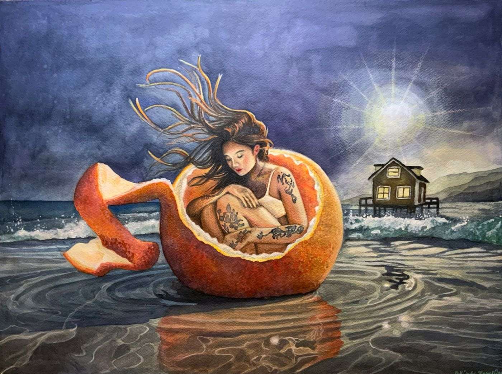

Time for Something for You is Kimberly's series about indulgence and excess, painted with a wink: frosting, confections and the cost of having everything. The paintings are invitations to look twice. They seem sweet at first, and then the details start asking questions.
The Comfort of Frosting
A woman in a white gown reclines on a pale blue chaise under a night sky full of stars, with palms behind her. Around her stand tiers of pink cakes, tarts and pastries, far more than anyone could eat. Beside her, a maid in a black uniform tends to her feet.
Look at the contrast Kimberly sets up: soft whites and sugared pinks against a deep blue night, the reclining figure against the working one, abundance on every surface and no one eating. Kimberly leaves the story open. Some viewers see pure pleasure; others see something lonelier.
Appealing Tides of Excess

A young woman sits curled inside a giant orange, its peel spiraling open on the wet sand. Her hair lifts in the wind, her eyes are closed, and her arms are covered in tattoos. Behind her, waves roll in under a bright, starburst light in the night sky, and a small lit house stands alone at the water's edge.
The orange is both shelter and fruit: something to rest inside and something meant to be consumed. Notice the reflections Kimberly painted in the shallow water around it, and the warm light of the house, the only other sign of anyone nearby.
This painting has been shown in two online group exhibitions, Scenerium 2025 and Hope 2026.
Why this series matters
Paintings of women and flowers are everywhere. These are different: each one is a small, strange scene with a story you can't quite finish. That is what makes them hold a wall. You notice something new in them months after they're hung.
Collectors who want first sight of new paintings in this direction can join the collector list. New work goes there a few days before it is listed anywhere else.